Projects
Industry work from my internship at Choice TechLab, plus projects spanning agentic AI, RAG, deep learning, IoT and full-stack development — from research papers to deployed applications.
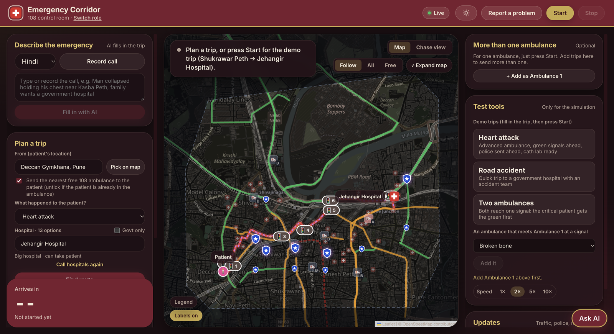
Emergency Corridor ● Internship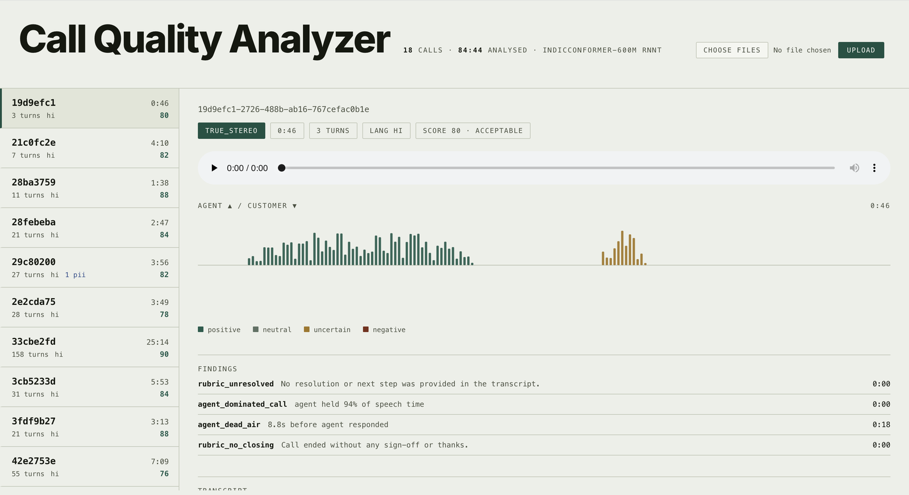
Call Quality ● Internship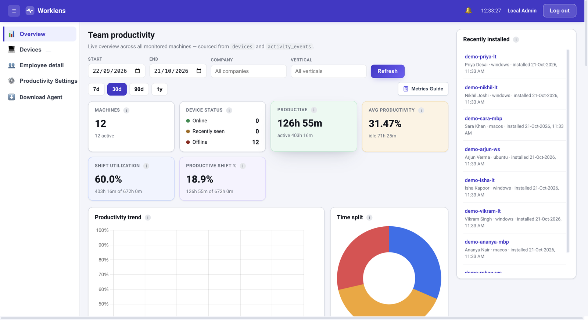
Choice360 ● Internship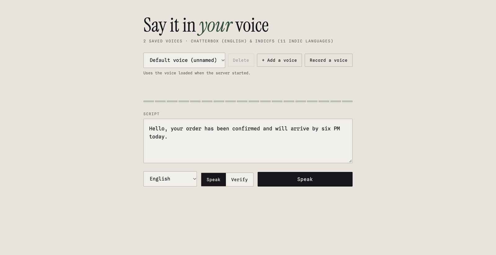
Vaani ● Internship Face Recognition ● IEEE 2025
Face Recognition ● IEEE 2025
 Energy Forecasting ● Springer 2025
Energy Forecasting ● Springer 2025
 Siora2k5 ● Agentic AI
Siora2k5 ● Agentic AI
 Chest X-Ray XAI ● Deep Learning
Chest X-Ray XAI ● Deep Learning
 MedGuide ● RAG
MedGuide ● RAG
 JobAI ● Mobile App
JobAI ● Mobile App
 Archive 2k5 ● Full-Stack
Archive 2k5 ● Full-Stack
 Credit Risk ● Data Science
Credit Risk ● Data Science
 Heart Disease MLOps ● MLOps
Heart Disease MLOps ● MLOps
AI-Powered Emergency Corridor
A traffic simulation of central Pune for 108 ambulances: signals ahead of the ambulance turn green, police get alerted about jams, and the destination hospital gets a readiness check before arrival. Built on SUMO + TraCI over OpenStreetMap data, with control-room, ambulance-crew and admin screens updating live over WebSockets, scikit-learn predictors, TomTom live traffic, Twilio alerts, and Claude for reading emergency calls.
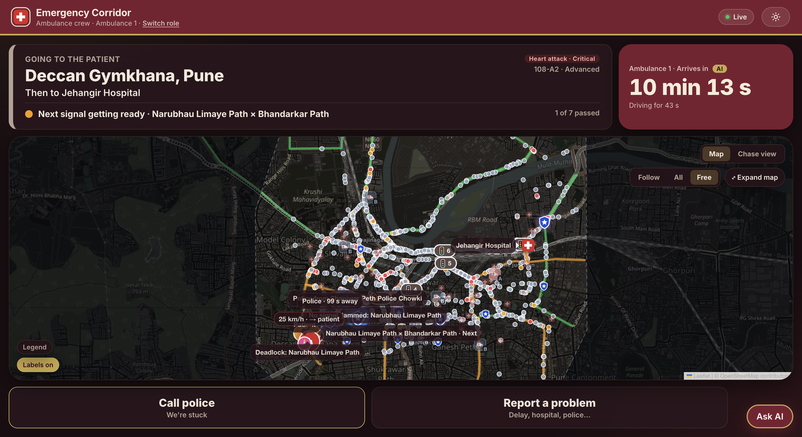
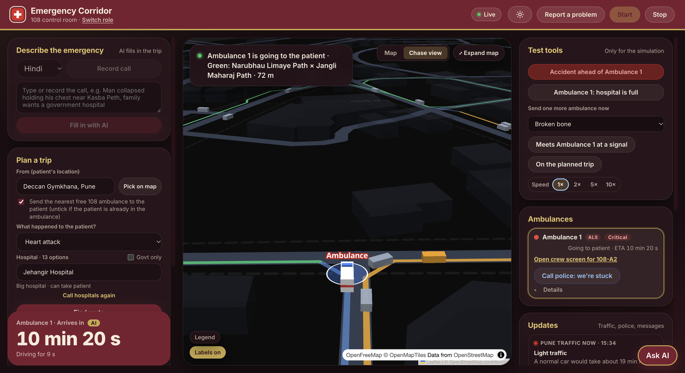
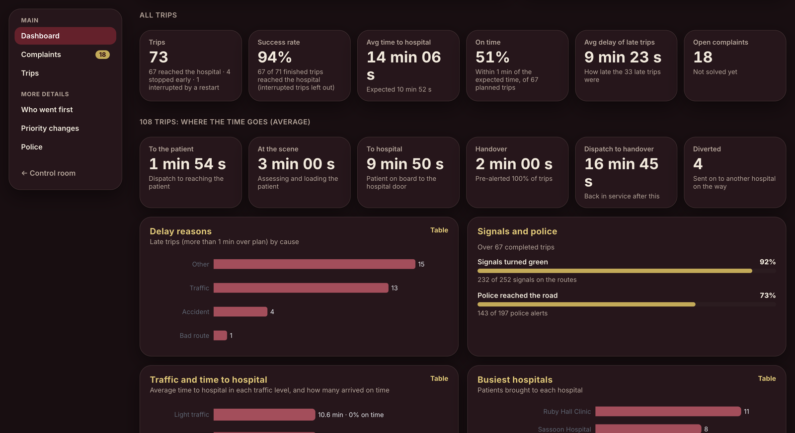
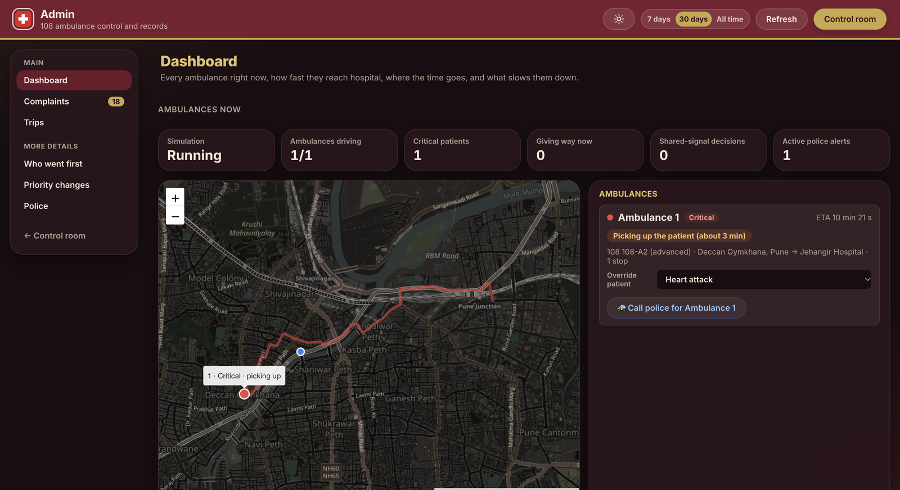
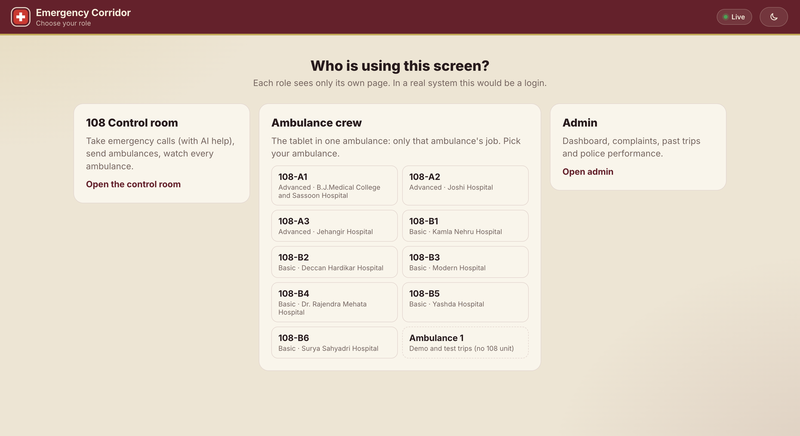
Call Quality Analyzer
An 11-stage pipeline that listens to recorded customer calls and checks sentiment, toxicity, PII leaks, and whether the agent read the required terms & conditions (RAG + DeBERTa-NLI + Claude). Routes English calls to faster-whisper and Hindi/Hinglish to IndicConformer-600M after Whisper broke down on 8 kHz Hinglish audio. Benchmarked at 18.5% DER (AMI) and 27.1% WER (IndicVoices Hindi). FastAPI backend with an upload-and-analyse dashboard.
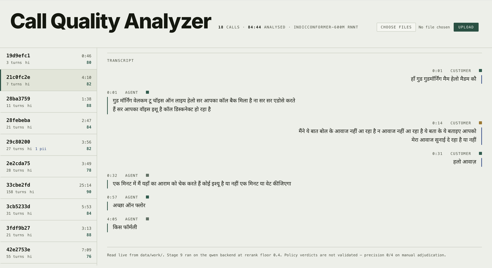


Choice360
A desktop productivity and telemetry platform. Async FastAPI backend with 16+ agent APIs and range-partitioned time-series tables in PostgreSQL; a cross-platform Python desktop agent (Linux/Windows/macOS) with an offline retry queue, encrypted credentials and signed auto-update; JWT device auth, S3 presigned screenshot uploads, and Gemini-generated per-device productivity summaries. 38 pytest suites, Dockerized.
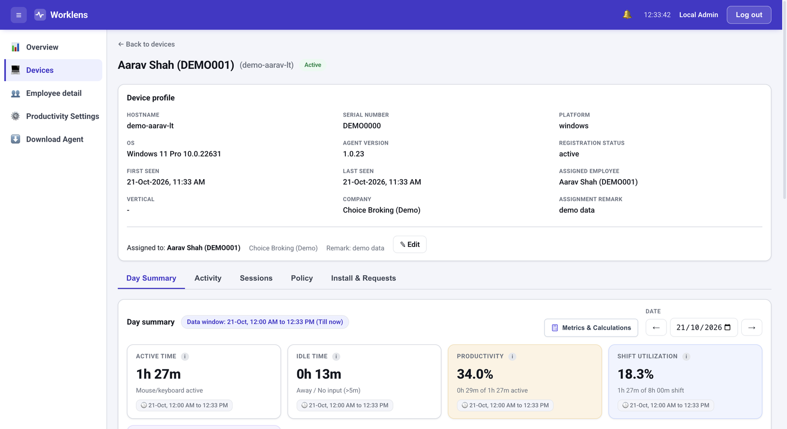
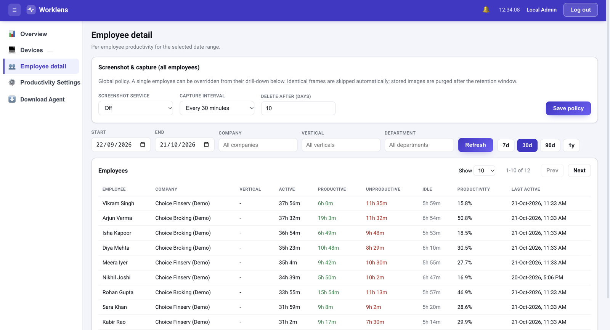
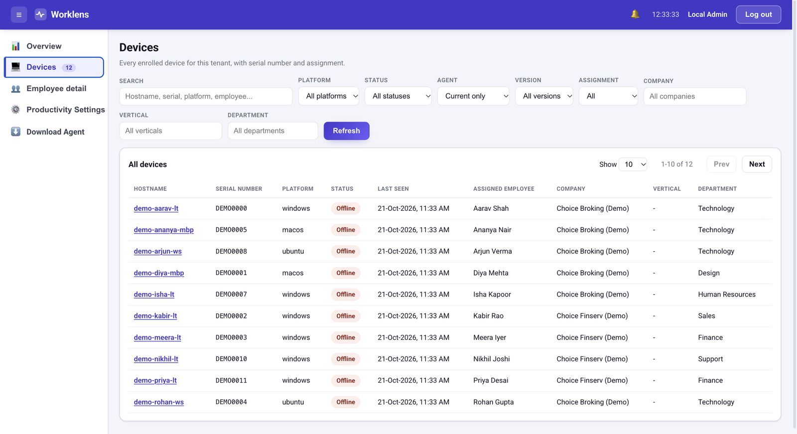

Vaani — Multilingual Voice Cloning
Give it a short voice sample and it speaks new text in that voice — in English and 11 Indian languages. English runs on Chatterbox in-process; Indic languages route to a separate IndicF5 service to isolate dependency conflicts. Includes Indian-context text normalization, Hinglish transliteration, Postgres-backed voice profiles, and a self-checking loop that verifies each output with faster-whisper WER and Resemblyzer speaker similarity.
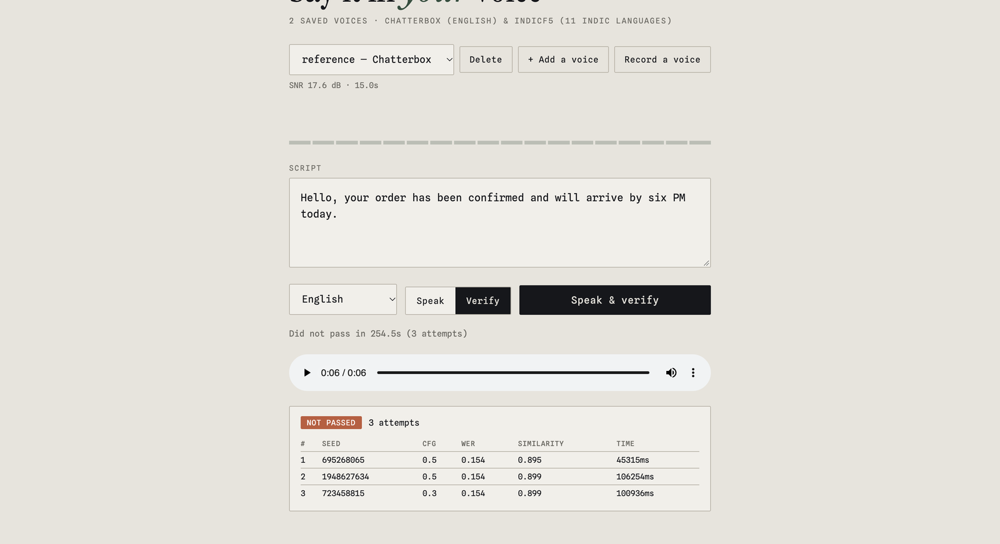


IoT-Enabled Face Recognition Attendance System
An end-to-end LBPH face recognition pipeline on a Raspberry Pi 4 that automates attendance for 50+ students at 95%+ accuracy — cutting per-session logging from ~5 minutes to zero manual input.


Attendance without the roll call
An end-to-end LBPH face recognition pipeline on a Raspberry Pi 4 that automates attendance.
Multivariate Time-Series Energy Consumption Prediction
An RFE-LSTM forecasting pipeline on the UCI Household Electric Power Consumption dataset (35K hourly samples). An ablation study identified lag features (1–3) as key signals, reducing MAE/RMSE by up to 7% versus the no-lag baseline — built for real-time smart-grid energy management.


Forecasting household energy use
An RFE-LSTM forecasting pipeline on the UCI Household Electric Power Consumption dataset (35K hourly samples) — built for real-time smart-grid energy management.
Siora2k5 — Agentic AI Research Assistant
An AI agent that autonomously selects and chains tools — web search, calculator, document RAG, and image vision — to answer multi-step questions. Built two ways: from scratch (to understand the agentic loop mechanics) and with LangGraph (for the production pattern). Achieves 100% tool-selection accuracy on the evaluation harness. FastAPI backend deployed on Render, Next.js chat UI on Vercel.


An agent that picks its own tools
An AI agent that autonomously selects and chains tools — web search, calculator, document RAG, and image vision — to answer multi-step questions.
Explainable AI for Chest X-Ray Diagnosis
A multi-label DenseNet121 classifier on the NIH ChestX-ray14 dataset (112K images, 14 labels) reaching 0.83 macro-AUC with patient-level stratification to avoid leakage. Deployed via a FastAPI endpoint with a Grad-CAM web UI so non-technical users can visualize predictions.


Explainable chest X-ray diagnosis
A multi-label DenseNet121 classifier on the NIH ChestX-ray14 dataset — 112K images, 14 labels.
MedGuide — Clinical Guideline RAG Assistant
A retrieval-augmented generation system that answers clinical questions grounded in WHO guideline PDFs. Retrieves the most relevant passages via vector search, then instructs the LLM to answer only from those sources — with inline citations (document + page number). When the corpus doesn't cover a question, it says so rather than guessing.


Clinical answers, grounded in WHO guidelines
A retrieval-augmented generation system that answers clinical questions grounded in WHO guideline PDFs.
JobAI — Your AI Career Copilot
An AI-powered mobile app that helps users optimize resumes for ATS compatibility, generate tailored cover letters, plan job-search strategy, draft cold outreach emails, and track applications across Applied, Interview, Offer, and Rejected stages.


Your AI career copilot
An AI-powered mobile app that helps users through the job search.
Archive 2k5 — Thrift Store with UPI QR Checkout
A full-stack thrift store template with an admin dashboard and a custom UPI QR checkout flow: items are reserved on checkout, buyers pay via any UPI app, and the admin confirms receipt — zero payment gateway fees. A complete Razorpay integration is built in but dormant; switching to automated payment verification requires one environment variable change.


A thrift store with UPI QR checkout
A full-stack thrift store template with an admin dashboard and a custom UPI QR checkout flow.
Credit Risk Analysis — Predicting Loan Default
End-to-end credit risk analysis on 150,000 borrowers from the "Give Me Some Credit" dataset. Rigorous EDA on a highly imbalanced target (6.7% default rate), followed by a head-to-head model comparison using ROC-AUC (0.84), precision, and recall. Key finding: credit utilization is the top default driver — but only a non-linear model (Random Forest, feature importance 0.27) reveals it; its linear correlation with the target is near zero.


Predicting loan default
End-to-end credit risk analysis on 150,000 borrowers from the “Give Me Some Credit” dataset.
Heart Disease Predictor — End-to-End MLOps Pipeline
A production ML engineering demo: a RandomForest classifier trained on the UCI Heart Disease dataset, served through a REST API, containerized with Docker, and automatically tested and rebuilt on every push via GitHub Actions CI/CD. The model is intentionally simple — the focus is the reproducible, portable infrastructure around it.


The infrastructure is the point
A production ML engineering demo. The model is intentionally simple — the focus is the reproducible, portable infrastructure around it.